Wahr/Falsch
BOOLEAN · Eingabefeld für eine Antwort aus zwei Werten
Was ist ein Wahr/Falsch-Feld?
- 1.1Feld hinzufügen und Aufbau des Eigenschaftsbereichs
1.1Feld hinzufügen und Aufbau des Eigenschaftsbereichs
Überblick
Wahr/Falsch (BOOLEAN) ist ein Eingabefeld, das mit einem von zwei Werten beantwortet wird. Es wird für Elemente mit zweigeteilter Antwort verwendet, etwa ob eine Einwilligung vorliegt · ob ein Kriterium erfüllt ist · ob ein Symptom vorhanden ist. Nach dem Hinzufügen werden sofort zwei Radiobuttons angezeigt; die Namen der beiden Werte können Sie ändern 3.2, und Sie können auch auf Dropdown umstellen. 3.3 Wenn sich die Antwort in drei oder mehr Möglichkeiten aufteilt oder später erweitert werden könnte, verwenden Sie den Typ Einzelauswahl.
Bildschirmbeschreibung
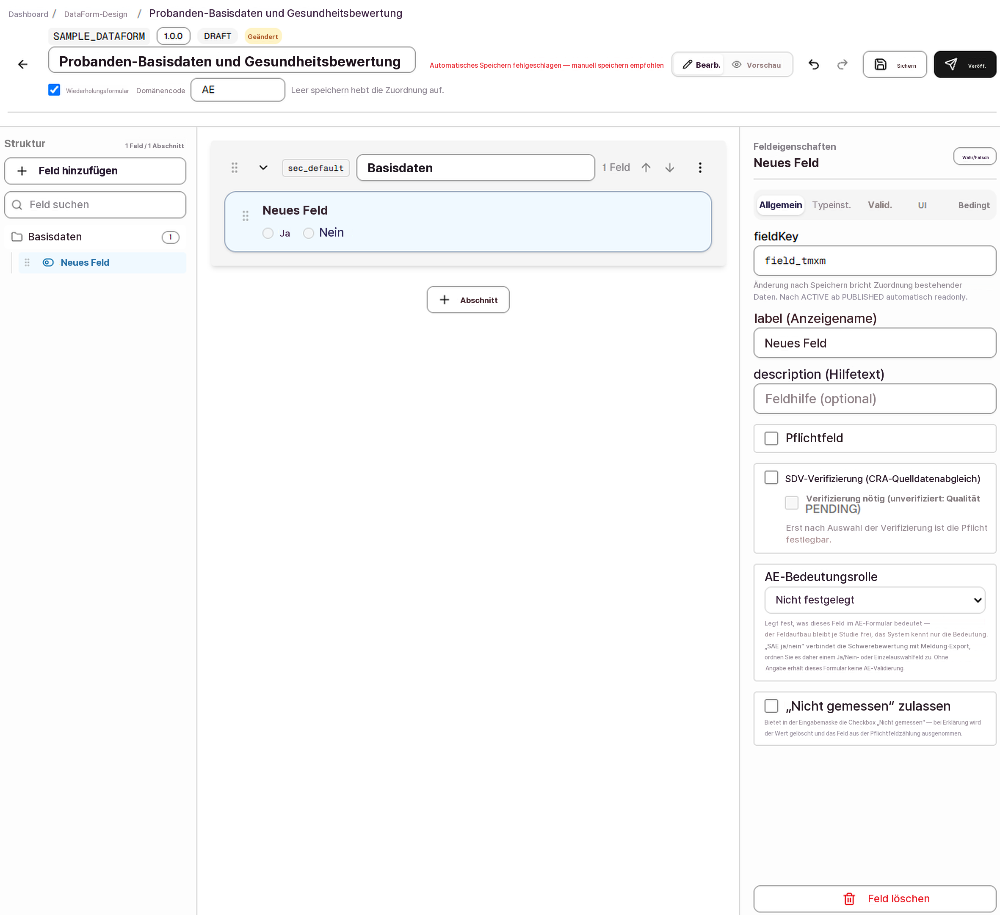
[+ Feld hinzufügen] — Wenn Sie hier den Typ festlegen, wird das Feld erstellt.
Im Strukturbaum wird das neue Feld hinzugefügt.
Auf dem WYSIWYG-Canvas werden sofort zwei Radiobuttons „Ja“ · „Nein“ angezeigt. Sie müssen keine Optionen eigens erstellen.
fieldKey — der tatsächliche Schlüssel, unter dem der Wert gespeichert wird. 2.1
label (Anzeigename) · description (Hilfetext) — der auf dem Bildschirm angezeigte Name und die ergänzende Beschreibung. 2.1
Pflichtfeld · SDV-Verifizierung — werden in 2.2 · 2.3 behandelt.
AE-Bedeutungsrolle — Wie der Bildschirmhinweis sagt: „‚SAE ja/nein‘ verbindet die Schwerebewertung mit Meldung · Export; ordnen Sie es daher einem Ja/Nein- oder Einzelauswahlfeld zu“ — dieser Typ ist ein Zuordnungsziel. Die Zuordnung erfolgt nur in Projekten, die ein AE-Formular verwenden.
„Nicht gemessen“ zulassen — wird in 2.4 behandelt.
Typ-Badge „Wahr/Falsch“ — der Typ des ausgewählten Felds. Nach dem Hinzufügen kann er nicht mehr geändert werden.
5 Eigenschafts-Tabs — Allgemein · Typeinstellungen · Validierung · UI · Bedingt. Die Kapitel 2–6 dieses Handbuchs entsprechen den einzelnen Tabs.
Zu beachten
Unbedingt prüfen Datenschäden · Formular nicht abschließbar
- • ⛔ Wenn Sie eine Einzelauswahl auf Radio einstellen, sieht der Bildschirm genauso aus wie bei diesem Typ. Am Aussehen lassen sich die beiden nicht unterscheiden; prüfen Sie daher das Typ-Badge. Der Unterschied liegt im gespeicherten Wert — bei Wahr/Falsch wird
true·falsegespeichert, bei der Einzelauswahl eine Zeichenkette wieY. Dieser Unterschied zeigt sich bei der Validierung 4.3 und bei der bedingten Anzeige Kap. 6. - • Wenn das Element als Grundlage einer bedingten Anzeige dienen soll, wählen Sie Einzelauswahl. Wird ein Wahr/Falsch-Feld als Bedingungsgrundlage für ein anderes Feld verwendet, wird dieses Feld nicht angezeigt. Lesen Sie vor der Auswahl zuerst Kapitel 6.
- • Der Typ kann nach dem Hinzufügen nicht geändert werden, und nach der Veröffentlichung (PUBLISH) lässt sich die Struktur selbst nicht mehr ändern. Wenn Sie den falschen Typ gewählt haben, löschen Sie das Feld und fügen Sie es neu hinzu. Ist im laufenden Betrieb eine Änderung nötig, veröffentlichen Sie eine neue Version.
Tab „Allgemein“ — Name · Pflicht · Verifizierung · Nicht gemessen
- 2.1fieldKey · Anzeigename · Hilfetext
- 2.2Pflichtfeld
- 2.3SDV-Verifizierung (CRA-Quelldatenabgleich)
- 2.4„Nicht gemessen“ zulassen
2.1fieldKey · Anzeigename · Hilfetext
Überblick
Bereich zur Festlegung des Namens eines Felds. Speicherschlüssel (fieldKey) und angezeigter Name (label) sind unterschiedliche Werte, und bis wann sie geändert werden dürfen, ist verschieden.
Bildschirmbeschreibung
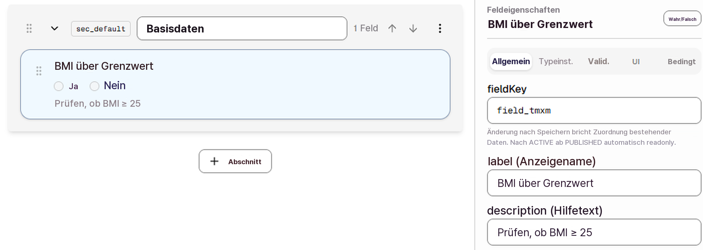
label (Anzeigename) — Geben Sie den Namen des Elements ein, der in der Eingabemaske angezeigt wird.
Erscheint als Feldtitel auf dem Canvas.
description (Hilfetext) — Geben Sie die ergänzende Beschreibung ein, die unter dem Anzeigenamen erscheint. Bleibt sie leer, wird nichts angezeigt.
Wird in grauer Schrift unter den Radiobuttons angezeigt.
fieldKey — der tatsächliche Schlüssel, unter dem der Wert gespeichert wird. Beim Hinzufügen eines Felds wird er automatisch vergeben, z. B. field_tmxm; wie der Bildschirmhinweis sagt: „Änderung nach Speichern bricht Zuordnung bestehender Daten“.
Zu beachten
Unbedingt prüfen Datenschäden · Formular nicht abschließbar
- • Formulieren Sie den Anzeigenamen so, dass sich die Antwort zweiteilt. Ist er wie „BMI über Grenzwert“ als Aussage formuliert, die mit Ja oder Nein beantwortet wird, ist klar, was „Ja“ · „Nein“ bedeuten. Lautet er nur „BMI“, ist nicht erkennbar, worauf sich Ja · Nein beziehen.
- • Schreiben Sie das Beurteilungskriterium in den Hilfetext. Wenn Sie wie in der Aufnahme mit „Prüfen, ob BMI ≥ 25“ das Kriterium für die Grenze festhalten, verringern sich die Abweichungen zwischen den Erfassern — aus den Namen der beiden Werte 3.2 allein ist das Kriterium nicht ersichtlich.
- • Ändern Sie fieldKey nach dem Speichern nicht. Die Verbindung zu bereits eingegebenen Daten geht verloren, und Validierungsregeln 4.3 und bedingte Anzeigen Kap. 6, die auf dieses Feld verweisen, funktionieren ebenfalls nicht mehr.
Leicht missverständliches Verhalten
- • Der Anzeigename (label) kann jederzeit geändert werden. Gespeicherte Werte sind davon nicht betroffen.
2.2Pflichtfeld
Überblick
Legt fest, ob dieses Feld ausgefüllt sein muss, damit das Formular abgeschlossen werden kann. Wahr/Falsch ist ein Typ, bei dem einer von zwei Werten gewählt wird; es gibt daher keinen Platz für „Weiß nicht“ — legen Sie vor dem Festlegen als Pflichtfeld zuerst fest, wie nicht feststellbare Fälle erfasst werden. 2.4
Bildschirmbeschreibung
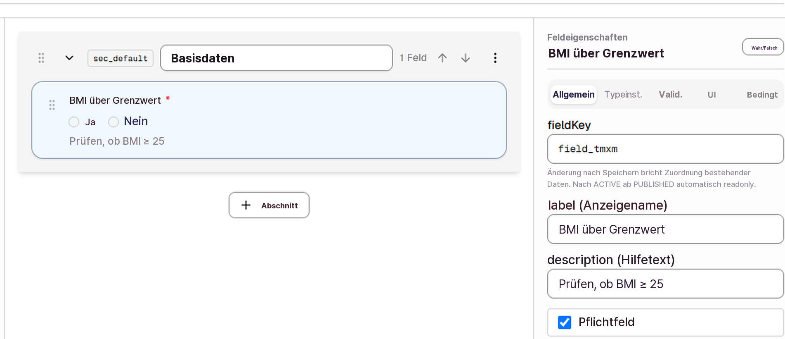
*Pflichtfeld — Wenn aktiviert, wird dieses Feld zum Pflichtfeld.
Auf dem Canvas erscheint rechts neben dem Anzeigenamen ein rotes *.
label · description — die in 2.1 eingegebenen Werte werden unverändert angezeigt.
Zu beachten
Unbedingt prüfen Datenschäden · Formular nicht abschließbar
- • ⛔ Legen Sie vor dem Festlegen als Pflichtfeld fest, wie mit „Nicht prüfbar“ umgegangen wird. Wahr/Falsch hat nur zwei Optionen; in nicht feststellbaren Fällen wählt der Erfasser daher willkürlich eine der beiden. Aktivieren Sie zusätzlich die Erklärung „Nicht gemessen“ 2.4, oder verwenden Sie von vornherein den Typ Einzelauswahl, wenn sich die Antwort dreiteilt.
- • Ausgeblendete Felder sind von der Pflichtprüfung ausgenommen. Solange ein Feld über die bedingte Anzeige Kap. 6 verborgen ist, wird das Formular auch dann abgeschlossen, wenn das Pflichtfeld leer ist.
Leicht missverständliches Verhalten
- • „Nein“ ist kein leerer Wert. Das System behandelt die Auswahl von „Nein“ und das Fehlen jeder Auswahl unterschiedlich — nur eine fehlende Eingabe fällt unter die Pflichtprüfung.
Hinweis
- • Ist „Nicht gemessen“ zulassen aktiviert und gibt der Erfasser die Erklärung ab, kann das Formular auch bei einem Pflichtfeld abgeschlossen werden. 2.4
2.3SDV-Verifizierung (CRA-Quelldatenabgleich)
Überblick
SDV (Source Data Verification) ist das Verfahren, bei dem der Monitor (CRA) die eingegebenen Werte mit den Quelldaten der Prüfstelle abgleicht. Hier legen Sie fest, ob dieses Feld Gegenstand dieses Abgleichs ist. Diese Einstellung ist bei allen Feldtypen gleich, daher ist auch der Bildschirm unabhängig vom Typ identisch.
Bildschirmbeschreibung


SDV-Verifizierung (CRA-Quelldatenabgleich) — Wenn aktiviert, wird dieses Feld in die Abgleichliste des CRA aufgenommen.
Mit der Aktivierung wird das Unterelement aktiv.
Verifizierung erforderlich (unverifiziert: Qualität PENDING) — kann erst festgelegt werden, nachdem ① aktiviert wurde. Wenn aktiviert, bleibt der Qualitätsstatus der betreffenden Daten auf PENDING, bis der CRA den Abgleich abgeschlossen hat.
Bevor ① aktiviert ist, ist ② ausgegraut und inaktiv. Wie der Bildschirmhinweis sagt: „Erst nach Auswahl der Verifizierung ist die Pflicht festlegbar.“
Zu beachten
Unbedingt prüfen Datenschäden · Formular nicht abschließbar
- • Wird der Wert geändert, wird die Verifizierung aufgehoben. Wenn Sie „Ja“ in „Nein“ ändern, kehrt der Qualitätsstatus auf PENDING zurück, und der CRA muss erneut abgleichen.
Leicht missverständliches Verhalten
- • Halten Sie das Beurteilungskriterium im Hilfetext fest. Bei Wahr/Falsch bleibt nur das Ergebnis, nicht die Beurteilungsgrundlage — anhand eines bloßen „Ja“ kann der CRA nicht erkennen, womit in den Quelldaten abzugleichen ist. Ist das Kriterium festgehalten, geht der Abgleich schneller. 2.1
- • SDV kann nicht von der Person durchgeführt werden, die die Daten eingegeben hat. Das System erzwingt eine Kreuzprüfung (Cross-User SoD); eingebende und verifizierende Person müssen daher zwingend verschieden sein.
Hinweis
- • Der Qualitätsstatus durchläuft PENDING → VERIFIED → CLEAN. Ist auch nur ein Feld mit Verifizierungspflicht unverifiziert, können die betreffenden Daten nicht CLEAN werden.
2.4„Nicht gemessen“ zulassen
Überblick
Diese Funktion erfasst nicht feststellbare Antworten als eigenen Wert. Da Wahr/Falsch nur zwei Optionen hat, lässt sich „noch nicht eingegeben“ nicht von „geprüft, aber unbekannt“ unterscheiden — diese Erklärung trennt die beiden. Bei diesem Typ ist diese Einstellung besonders wichtig.
Bildschirmbeschreibung

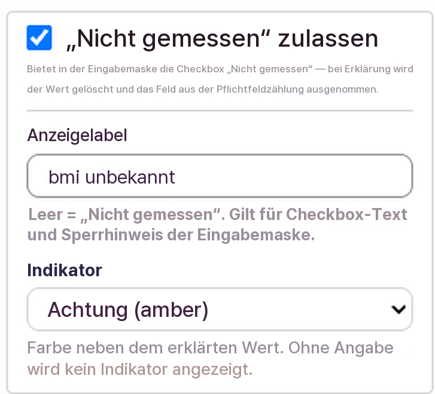
„Nicht gemessen“ zulassen — Wenn aktiviert, erscheint in der Eingabemaske die Checkbox „Nicht gemessen“, und die beiden folgenden Elemente werden angezeigt.
Anzeigelabel — Bleibt es leer, gilt der Standardwert „Nicht gemessen“.
Wenn Sie es in bmi unbekannt ändern, gilt dieser Text sowohl für die Checkbox in der Eingabemaske als auch für den Sperrhinweis.
Indikator — Standardwert ist Keine.
Wenn Sie ihn auf Achtung (amber) ändern, erscheint neben dem erklärten Wert eine Markierung in dieser Farbe.
Zu beachten
Unbedingt prüfen Datenschäden · Formular nicht abschließbar
- • ⛔ Bei Wahr/Falsch gibt es keinen Platz für „Weiß nicht“. Da sich die Optionen nicht erweitern lassen, ist das Aktivieren dieser Erklärung der einzige Weg, nicht feststellbare Fälle zu erfassen. Ohne sie gibt der Erfasser ersatzweise „Nein“ ein, und „nein“ und „weiß nicht“ vermischen sich in einem Wert.
- • Bei der Erklärung wird der Wert gelöscht. Wie der Bildschirmhinweis sagt — „bei Erklärung wird der Wert gelöscht und das Feld aus der Pflichtfeldzählung ausgenommen.“
Leicht missverständliches Verhalten
- • Erklärte Felder werden aus der Pflichtfeldzählung ausgenommen. Das Formular kann daher auch bei einem Pflichtfeld abgeschlossen werden.
Hinweis
- • Ohne festgelegten Indikator wird die Farbmarkierung nicht angewendet. Wenn eine Hervorhebung nötig ist, wählen Sie z. B. Achtung (amber).
Tab „Typeinstellungen“ — Namen und Anzeigeart der beiden Werte
- 3.1Gesamtaufbau des Tabs „Typeinstellungen“
- 3.2trueLabel · falseLabel
- 3.3Anzeigeart (displayStyle)
- 3.4Standardwert (defaultValue)
3.1Gesamtaufbau
Überblick
Die Typeinstellungen von Wahr/Falsch umfassen nur vier Felder. Da keine Optionen erstellt werden müssen, legen Sie nur die Namen der beiden Werte 3.2 · die Anzeigeart 3.3 · den Standardwert 3.4 fest. Anfangs sind alle leer; auch wenn Sie sie leer lassen, gelten Standardwerte, und das Feld funktioniert normal.
Bildschirmbeschreibung
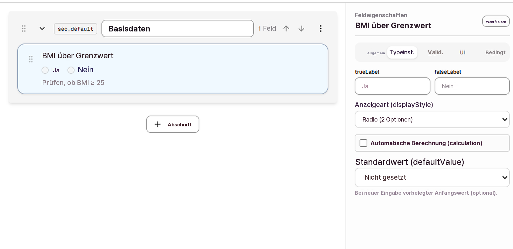
trueLabel — der Text, der für true angezeigt wird. Bleibt es leer, gilt „Ja“. 3.2
Auf dem Canvas sind bereits zwei Radiobuttons angezeigt.
falseLabel — der Text, der für false angezeigt wird. Bleibt es leer, gilt „Nein“. 3.2
Anzeigeart (displayStyle) — Radio (2 Optionen) oder Dropdown. Standard bei diesem Typ ist Radio. 3.3
Standardwert (defaultValue) — der Wert, der bei einer neuen Eingabe vorbelegt wird. Anfangs Nicht gesetzt. 3.4
Automatische Berechnung (calculation) — das Element wird angezeigt, wird bei diesem Typ aber nicht verwendet. Es berechnet Werte über eine Formel; verwenden Sie es daher beim Typ Zahl.
Typ-Badge „Wahr/Falsch“ — der Typ des Felds, das Sie gerade einstellen.
Eigenschafts-Tabs — aktuell ist der Tab Typeinstellungen geöffnet.
Zu beachten
Unbedingt prüfen Datenschäden · Formular nicht abschließbar
- • Die Optionen lassen sich nicht auf drei erweitern. Wenn Sie „Ja“ · „Nein“ · „Nicht zutreffend“ benötigen, verwenden Sie nicht diesen Typ, sondern den Typ Einzelauswahl. Nach dem Hinzufügen kann der Typ nicht geändert werden. 1.1
Leicht missverständliches Verhalten
- • Die hellgrauen Texte
Ja·Neinsind keine eingegebenen Werte, sondern Hinweise. Bleibt das Feld leer, gilt genau dieser Text; wenn Sie ihn so übernehmen möchten, können Sie das Feld leer lassen. 3.2 - • Die Standard-Anzeigeart dieses Typs ist Radio. Bei der Einzelauswahl ist der Standard Dropdown, also umgekehrt — wenn Sie beide Typen zusammen erstellen, kommt es hier leicht zu Verwechslungen. 3.3
- • Auch wenn Sie den Standardwert auf diesem Bildschirm festlegen, wird er nicht auf dem Canvas angezeigt. Zur Kontrolle müssen Sie zu [Vorschau] wechseln. 3.4
3.2trueLabel · falseLabel
Überblick
Legt fest, welche Namen die beiden Werte erhalten. Es ändert sich nur der auf dem Bildschirm sichtbare Text; gespeichert werden immer true und false — diese Unterscheidung zeigt sich unverändert bei der Validierung 4.3 und beim Datenexport.
Bildschirmbeschreibung
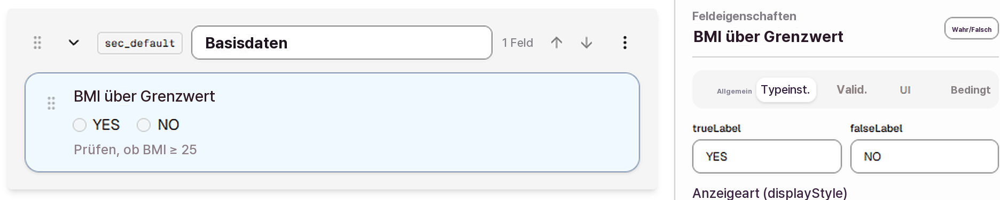
YES · NO ändert sich der Text der Radiobuttons auf dem Canvas soforttrueLabel — geben Sie den Text für den true-Radiobutton ein.
Der Text des linken Radiobuttons auf dem Canvas ändert sich auf YES.
falseLabel — geben Sie den Text für den false-Radiobutton ein.
Der Text des rechten Radiobuttons auf dem Canvas ändert sich auf NO.
Typ-Badge „Wahr/Falsch“ — auch wenn Sie den Text ändern, ändert sich der Typ nicht.
Zu beachten
Unbedingt prüfen Datenschäden · Formular nicht abschließbar
- • ⛔ Auch wenn Sie den Text ändern, werden
true·falsegespeichert. Auch bei der AnzeigeYESgelangttruein die Daten. Beim Vergleich in Validierungsregeln 4.3 und bei der bedingten Anzeige Kap. 6 müssen Sie nicht den Bildschirmtext, sonderntrue·falseangeben. - • ⛔ Links ist immer
true. Wenn Sie die beiden Felder vertauscht ausfüllen, wird die Bedeutung umgekehrt gespeichert — der Bildschirm sieht normal aus, und es wird kein Fehler angezeigt. Prüfen Sie unbedingt, dass Sie „Nein“ nicht in trueLabel eingetragen haben. - • Vermeiden Sie verneinte Formulierungen. Ein Text wie „Nicht unterblieben“ ergibt zusammen mit „Nein“ eine doppelte Verneinung, sodass der Erfasser das Gegenteil wählt.
Leicht missverständliches Verhalten
- • Der Text kann auch nach der Veröffentlichung geändert werden. Da gespeicherte Werte nicht betroffen sind, können Sie eine ungünstige Formulierung jederzeit korrigieren.
3.3Anzeigeart (displayStyle)
Überblick
Legt fest, in welcher Form die beiden Werte angezeigt werden. Bei Radio (2 Optionen) sind beide Werte auf einen Blick sichtbar, Dropdown benötigt weniger Platz. Der gespeicherte Wert ist in beiden Fällen gleich.
Bildschirmbeschreibung
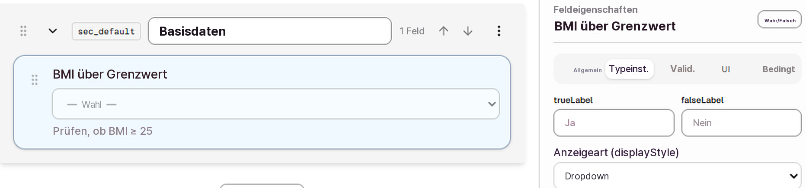
— Auswahl —Anzeigeart (displayStyle) — wählen Sie zwischen Radio (2 Optionen) und Dropdown. Ohne Angabe gilt Radio.
Der Canvas wechselt zu einem Dropdown-Feld, und — Auswahl — wird angezeigt. Beim Aufklappen erscheinen nacheinander trueLabel · falseLabel.
trueLabel · falseLabel — auch wenn Sie die Anzeigeart ändern, gelten die beiden Texte unverändert. 3.2
Typ-Badge „Wahr/Falsch“
Zu beachten
Unbedingt prüfen Datenschäden · Formular nicht abschließbar
- • ⛔
— Auswahl —im Dropdown lässt sich nicht ändern. Dieser Text ist fest und wird auch nicht durch den placeholder im Tab „UI“ ersetzt — beim Typ Einzelauswahl wird er ersetzt, hier funktioniert dasselbe Vorgehen also nicht. Wenn ein Hinweis nötig ist, schreiben Sie ihn in helpText. 5.4 - • Beim Dropdown sehen „keine Auswahl“ und „Nein“ ähnlich aus. Im eingeklappten Zustand erscheinen
— Auswahl —und „Nein“ beide als eine Zeile; daher ist schwer zu bemerken, dass der Erfasser eine Antwort übersprungen hat.
Leicht missverständliches Verhalten
- • Für Aufzeichnungen in klinischen Studien wird Radio empfohlen. Da beide Werte sichtbar sind, ist sowohl erkennbar, was gefragt wird, als auch, dass nicht geantwortet wurde. Beim Dropdown sind die Optionen vor dem Aufklappen nicht erkennbar.
- • Bei Radio wird eine ausgewählte Option durch erneutes Auswählen wieder abgewählt. Bei einer Fehlauswahl können Sie so in den Zustand ohne Auswahl zurückkehren.
3.4Standardwert (defaultValue)
Überblick
Legt den Wert fest, der bei einer neuen Eingabe vorausgewählt ist. Anfangs Nicht gesetzt; wenn Sie ihn festlegen, ist dieser Wert bereits beim Öffnen der Eingabemaske ausgewählt. In der Bearbeitungsansicht wird er nicht angezeigt, ob er festgelegt ist, lässt sich nur in der Vorschau prüfen.
Bildschirmbeschreibung
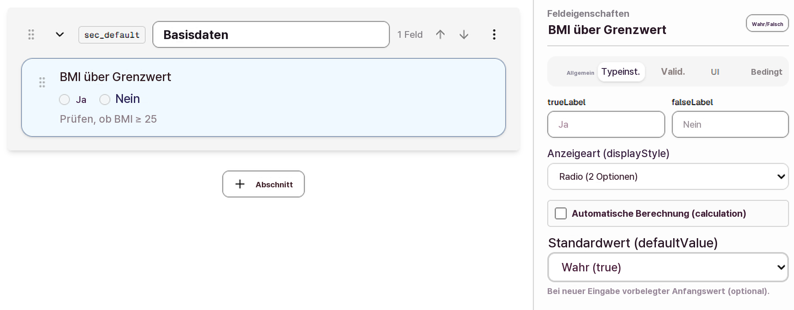
Wahr (true) festgelegt — der Canvas ändert sich nicht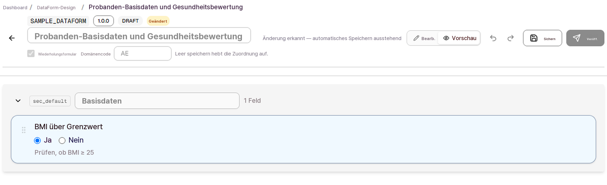
Standardwert (defaultValue) — wählen Sie zwischen Nicht gesetzt · Wahr (true) · Falsch (false).
In [Vorschau] wird „Ja“ als ausgewählt angezeigt.
Der Canvas ändert sich nicht. Auch wenn ein Standardwert festgelegt ist, bleiben die Radiobuttons in der Bearbeitungsansicht ohne Auswahl; hier ist also nicht erkennbar, ob er festgelegt wurde.
[Vorschau] — die Schaltfläche zur Kontrolle in derselben Darstellung wie die tatsächliche Eingabemaske.
Zu beachten
Unbedingt prüfen Datenschäden · Formular nicht abschließbar
- • ⛔ Die Optionen folgen nicht dem erstellten Text. Auch wenn Sie trueLabel in
YESändern, wird dieses Feld als „Wahr (true)“ angezeigt — der Bildschirm zeigt nicht an, welche SeiteYESist; merken Sie sich daher beim Festlegen, dass das linke Feld (trueLabel) „Wahr“ ist. 3.2 - • ⛔ Entscheiden Sie mit Bedacht, ob Sie in Aufzeichnungen klinischer Studien einen Standardwert setzen. Der Wert ist eingetragen, auch wenn der Erfasser nichts geprüft hat; so kann eine nicht erfragte Antwort gespeichert werden. Belassen Sie ihn möglichst auf Nicht gesetzt.
- • Ein Feld mit Standardwert besteht die Pflichtprüfung, auch wenn der Erfasser es nicht anrührt. Seien Sie besonders vorsichtig, wenn Sie es zusammen mit Pflichtfeld 2.2 verwenden.
Leicht missverständliches Verhalten
- • Ob er festgelegt ist, ist in der Bearbeitungsansicht nicht erkennbar. Prüfen Sie es unbedingt in [Vorschau] — dies ist die Einstellung, die bei diesem Typ am leichtesten übersehen wird.
Tab „Validierung“ — Wertprüfung vor dem Speichern
- 4.1Ohne Validierungsregeln
- 4.2Regel hinzufügen
- 4.3Fertig erstellte Regel — Vergleich mit anderem Feld
4.1Ohne Validierungsregeln
Überblick
In diesem Tab werden Regeln gesammelt, die vor dem Speichern prüfen, ob ein Wert die Bedingungen erfüllt. Bei Wahr/Falsch kann nur einer von zwei Radiobuttons gewählt werden, daher gibt es keine Möglichkeit, ein falsches Format einzugeben — Prüfungen wie Länge · Bereich sind daher nicht nötig; verwenden Sie diesen Tab nur, wenn Sie die Beziehung zu anderen Feldern prüfen. 4.3
Bildschirmbeschreibung
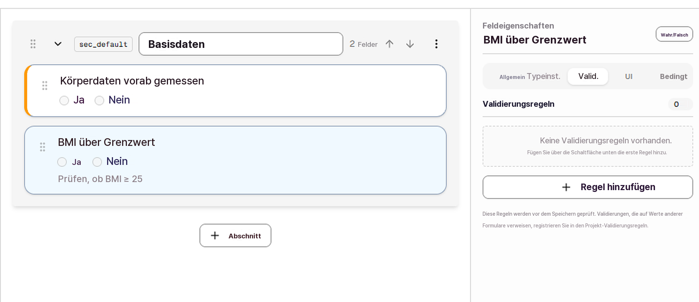
[+ Regel hinzufügen] — erstellt die erste Regel. Der Bildschirm nach der Auswahl wird in 4.2 erläutert.
Bereich Validierungsregeln und Anzahl der registrierten Regeln. Anfangs 0 Regeln.
Ohne Regeln erscheint der Hinweis „Keine Validierungsregeln vorhanden. Fügen Sie über die Schaltfläche unten die erste Regel hinzu.“
Hinweis unten — „Diese Regeln werden vor dem Speichern geprüft. Validierungen, die auf Werte anderer Formulare verweisen, registrieren Sie in den Projekt-Validierungsregeln.“
Zu beachten
Unbedingt prüfen Datenschäden · Formular nicht abschließbar
- • ⛔ Validierungen, die auf Werte anderer Formulare verweisen, können hier nicht erstellt werden. Registrieren Sie solche Regeln im Bildschirm „Projekt-Validierungsregeln“. Dieser Tab behandelt nur Prüfungen, die innerhalb desselben Formulars abgeschlossen sind.
- • Der Tab „Validierung“ wird nicht nach Typ eingeschränkt. Da auch Regeln wählbar sind, die nicht zu Wahr/Falsch passen, müssen Sie selbst prüfen, ob die gewählte Regel für diesen Typ greift. 4.2
Leicht missverständliches Verhalten
- • Die meisten Wahr/Falsch-Felder brauchen keine Regel. Da nur einer von zwei Werten gewählt werden kann, gibt es nichts zu prüfen — verwenden Sie Regeln nur, wenn eine Beziehung zu einem anderen Feld besteht. 4.3
- • Die Aufnahme enthält zwei Felder: „Körperdaten vorab gemessen“ und „BMI über Grenzwert“ — da sich die Bedeutung des zweiten Felds nach der Antwort im ersten richtet, wird in 4.3 eine Regel erstellt, die beide Felder verknüpft.
4.2Regel hinzufügen
Überblick
Wenn Sie in 4.1 [+ Regel hinzufügen] wählen, wird der Block Regel 1 erstellt. Anfangs ist „Wertebereich“ eingestellt, was bei Wahr/Falsch mangels Größe nicht greift — Sie müssen auf „Vergleich mit anderem Feld“ umstellen. Die Aufnahme zeigt den Zustand nach der Umstellung.
Bildschirmbeschreibung
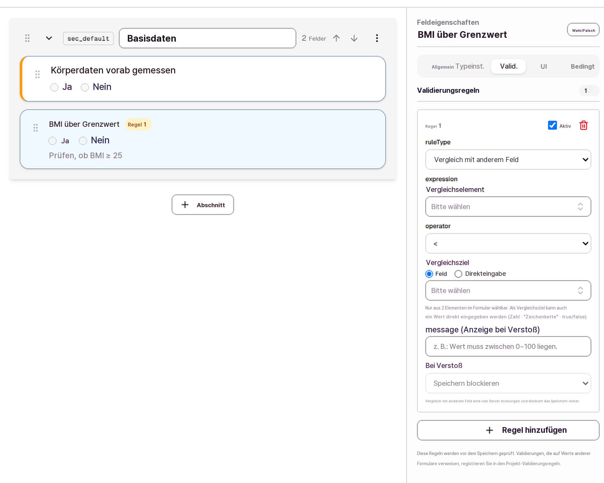
[+ Regel hinzufügen] — erstellt eine weitere Regel. (Dieselbe Schaltfläche, die Sie in 4.1 gewählt haben.)
Neben dem Anzeigenamen auf dem Canvas erscheint das Badge „Regel 1“.
Die Regelanzahl ändert sich auf 1 Regel.
Checkbox Aktiv und Symbol Löschen — Sie können die Regel vorübergehend aussetzen, ohne sie zu löschen.
ruleType — die Art der Regel. Direkt nach dem Erstellen ist „Wertebereich“ eingestellt; ändern Sie sie auf „Vergleich mit anderem Feld“.
Vergleichselement — wählen Sie ein anderes Feld desselben Formulars. 4.3
operator — die Vergleichsart.
Vergleichsziel — wählen Sie zwischen Feld und Direkteingabe.
message (Anzeige bei Verstoß) — der Text, der Benutzern bei einem Regelverstoß angezeigt wird.
Bei Verstoß — bei „Vergleich mit anderem Feld“ fest auf Speichern blockieren eingestellt. 4.3
Die hellgraue Schrift und „z. B.: Wert muss zwischen 0~100 liegen.“ sind Eingabebeispiele und keine eingestellten Werte.
Zu beachten
Unbedingt prüfen Datenschäden · Formular nicht abschließbar
- • ⛔ Verwenden Sie bei Wahr/Falsch nicht „Wertebereich“ · „Dezimalstellen“. Die beiden Werte haben weder Größe noch Nachkommastellen, daher greift die Prüfung nicht. Der Bildschirm lässt die Auswahl dennoch zu; der Ersteller muss sie daher selbst aussortieren.
- • ⛔ Mit „Format (Regex)“ kann das Speichern blockiert werden. Regeln werden unabhängig vom Typ ausgewertet; ist auf einem Wahr/Falsch-Feld eine Zeichenformatregel gesetzt, wird auch ein korrekt gewählter Wert abgelehnt. Verwenden Sie sie bei diesem Typ nicht.
- • Bleibt message leer, wissen Benutzer nicht, warum gesperrt wurde. Geben Sie unbedingt einen Text ein.
Leicht missverständliches Verhalten
- • Sie können mehrere Regeln erstellen; gespeichert wird nur, wenn alle aktiven Regeln erfüllt sind.
4.3Fertig erstellte Regel — Vergleich mit anderem Feld
Überblick
Wenn Sie ruleType auf Vergleich mit anderem Feld umstellen, wird mit dem Wert eines anderen Felds im selben Formular verglichen. Dies ist die einzige Regelart, die bei Wahr/Falsch-Feldern tatsächlich nutzbar ist; damit lässt sich ausdrücken, dass die Zulässigkeit dieses Elements von der Antwort auf eine vorherige Frage abhängt.
Bildschirmbeschreibung
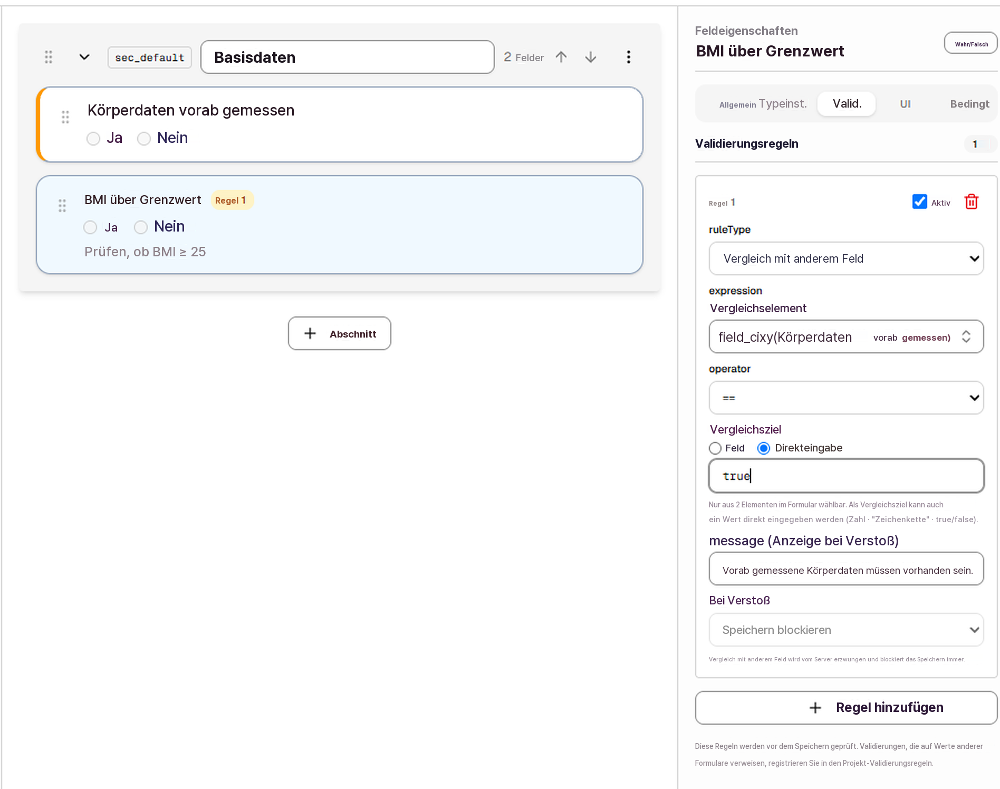
true istruleType = Vergleich mit anderem Feld — Wenn ausgewählt, werden die Felder darunter für den Vergleich umgestellt.
Vergleichselement — wählen Sie ein anderes Feld desselben Formulars. In der Aufnahme field_cixy(Körperdaten vorab gemessen).
operator — die Vergleichsart. In der Aufnahme == (gleich).
Vergleichsziel — wählen Sie zwischen Feld und Direkteingabe. In der Aufnahme wurde per Direkteingabe true eingetragen — die korrekte Schreibweise beim Vergleich mit einem Wahr/Falsch-Feld.
message (Anzeige bei Verstoß) — in der Aufnahme Vorab gemessene Körperdaten müssen vorhanden sein.
Bei Verstoß — grau und inaktiv. Wie der Bildschirmhinweis sagt: „Vergleich mit anderem Feld wird vom Server erzwungen und blockiert das Speichern immer.“ — bei dieser Regel kann keine Warnung gewählt werden; sie ist auf Speichern blockieren festgelegt.
Bildschirmhinweis — „Nur aus 2 Elementen im Formular wählbar. Als Vergleichsziel kann auch ein Wert direkt eingegeben werden (Zahl · "Zeichenkette" · true/false).“ Wahr/Falsch entspricht dem letzten Format.
Zu beachten
Unbedingt prüfen Datenschäden · Formular nicht abschließbar
- • ⛔ Geben Sie beim Vergleich mit Wahr/Falsch unbedingt
trueoderfalsean. Wenn Sie gleichbedeutend1·0·Jaeintragen, kann das System nicht auswerten, und die Regel wird stillschweigend unwirksam — der Bildschirm sieht normal aus, und es wird kein Fehler angezeigt. Dies ist der häufigste Fehler bei diesem Typ. - • ⛔ Prüfen Sie die Richtung der Bedingung vor der Veröffentlichung. Validierungsregeln werden als Bedingung formuliert, die erfüllt sein muss. Die Einstellung in der Aufnahme lautet „Körperdaten vorab gemessen muss
truesein“; wird „Nein“ gewählt, wird das Speichern daher blockiert. Prüfen Sie nach dem Einstellen das tatsächliche Verhalten in der Vorschau.
Leicht missverständliches Verhalten
- • Diese Regel kann nicht als Warnung eingestellt werden. Da Bei Verstoß auf Speichern blockieren festgelegt ist, verwenden Sie sie nur für Beziehungen, die unbedingt verhindert werden müssen.
- • Ist dieses Feld leer, wird die Regel nicht geprüft. Der Zustand ohne Auswahl wird nicht geprüft; fehlende Eingaben zu verhindern ist Aufgabe von Pflichtfeld 2.2.
Tab „UI“ — Bildschirmanordnung und Hinweistexte
- 5.1Gesamtaufbau des Tabs „UI“
- 5.2Layoutbreite
- 5.3Schreibgeschützt · Ausblenden
- 5.4helpText (Hilfetext)
5.1Gesamtaufbau
Überblick
In diesem Tab legen Sie nicht den Wert selbst fest, sondern wie das Feld auf dem Bildschirm angeordnet und erläutert wird. Die Einstellungen dieses Tabs ändern die gespeicherten Daten selbst nicht. Ausblenden verbirgt das Feld jedoch nur auf dem Bildschirm; lesen Sie daher vor der Verwendung 5.3.
Bildschirmbeschreibung
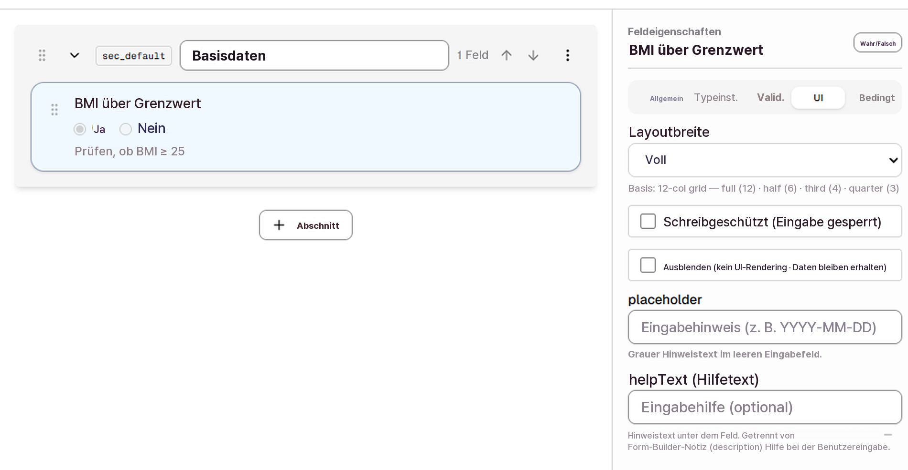
Layoutbreite — die Breite, die dieses Feld in einer Formularzeile einnimmt. 5.2
Schreibgeschützt (Eingabe gesperrt) — zeigt das Feld an, verhindert aber Änderungen. 5.3
Ausblenden (kein UI-Rendering · Daten bleiben erhalten) — verbirgt das Feld auf dem Bildschirm. 5.3
helpText (Hilfetext) — der Hinweistext, der unter dem Feld angezeigt wird. 5.4
placeholder — das Element wird angezeigt, gilt bei diesem Typ aber nicht. Wie der Hinweistext „Grauer Hinweistext im leeren Eingabefeld.“ angibt, ist es eine Einstellung für Typen mit Eingabefeld; Wahr/Falsch hat nur Radiobuttons und Dropdown, daher gibt es keinen Platz für den Text. 5.4
Typ-Badge „Wahr/Falsch“
Zu beachten
Unbedingt prüfen Datenschäden · Formular nicht abschließbar
- • Auch wenn Sie placeholder ausfüllen, erscheint er nicht auf dem Bildschirm. Da weder Fehler noch Warnung angezeigt werden, verschwindet der eingetragene Hinweis stillschweigend — schreiben Sie Hinweise in helpText. 5.4
Leicht missverständliches Verhalten
- • Die Einstellungen in diesem Tab ändern gespeicherte Werte nicht. Nur Anordnung und Hinweise ändern sich.
- • Dass in der Aufnahme „Ja“ ausgewählt erscheint, liegt am festgelegten Standardwert. 3.4
Hinweis
- • Verwenden Sie Schreibgeschützt und Ausblenden nicht zusammen. Ausblenden hat Vorrang, die Einstellung Schreibgeschützt bleibt dann wirkungslos. 5.3
5.2Layoutbreite
Überblick
Legt die Breite fest, die dieses Feld in einer Formularzeile einnimmt. Wahr/Falsch besteht nur aus zwei Radiobuttons und ist ein horizontal kurzer Typ; bei voller Breite bleibt rechts Platz frei, und das Formular wird länger — fassen Sie kurze Elemente in einer Zeile zusammen, wird das Formular kürzer.
Bildschirmbeschreibung
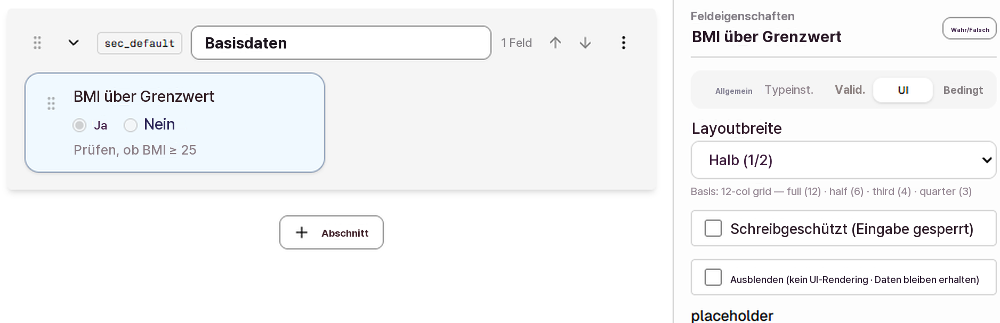
Layoutbreite — Wählen Sie zwischen Voll · Halb (1/2) · 1/3 · 1/4.
Die Karte auf dem Canvas wird auf die halbe Breite verkleinert. Im freien Platz derselben Zeile wird ein anderes Feld angeordnet.
Basis: 12-col grid — wie der Bildschirmhinweis sagt: „full (12) · half (6) · third (4) · quarter (3)“.
Zu beachten
Unbedingt prüfen Datenschäden · Formular nicht abschließbar
- • Verkleinern Sie die Breite bei langem Text nicht. Haben Sie in trueLabel · falseLabel lange Texte eingetragen, werden die beiden Radiobuttons umbrochen und sind schwer lesbar. 3.2
Leicht missverständliches Verhalten
- • Bei Feldern, die auf Dropdown umgestellt sind, ist eine kleinere Breite unbedenklich. Im eingeklappten Zustand belegen sie unabhängig von der Textlänge eine Zeile. 3.3
- • Fassen Sie zusammengehörige kurze Elemente in einer Zeile zusammen. Gibt es mehrere Elemente, die mit Ja · Nein beantwortet werden, können Sie mit Halb oder 1/3 die Formularlänge verringern.
Hinweis
- • Ohne Angabe gilt die volle Breite.
5.3Schreibgeschützt · Ausblenden
Überblick
Mit dieser Einstellung wird ein Feld angezeigt, aber nicht änderbar gemacht, oder auf dem Bildschirm verborgen, wobei der Wert erhalten bleibt. Keine der beiden löscht gespeicherte Werte.
Bildschirmbeschreibung
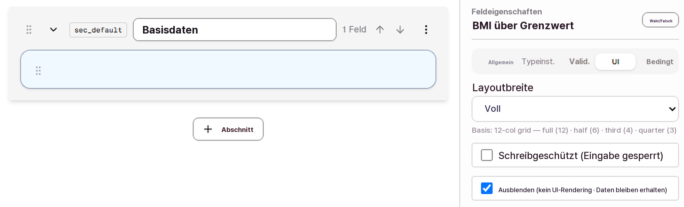
Schreibgeschützt (Eingabe gesperrt) — wenn aktiviert, werden die Radiobuttons angezeigt, der Erfasser kann die Auswahl aber nicht ändern. Bereits gespeicherte Werte bleiben sichtbar.
Ausblenden (kein UI-Rendering · Daten bleiben erhalten) — Wenn aktiviert, wird dieses Feld in der Eingabemaske nicht angezeigt.
Von der Karte auf dem Canvas bleibt nur ein leerer Rahmen. Weder Anzeigename noch Radiobuttons werden angezeigt.
Layoutbreite — der in 5.2 eingestellte Wert.
Zu beachten
Unbedingt prüfen Datenschäden · Formular nicht abschließbar
- • ⛔ Ausblenden löscht keine Aufzeichnungen. Bereits gespeicherte Werte bleiben erhalten und sind in Export und Audit-Trail enthalten. Um Werte zu entfernen, müssen Sie das Feld nicht ausblenden, sondern löschen; nach der Veröffentlichung ist das Löschen nicht möglich. 1.1
Leicht missverständliches Verhalten
- • Verwenden Sie Schreibgeschützt für automatisch befüllte Werte. Es eignet sich, wenn eine anderswo getroffene Beurteilung nur angezeigt werden soll. Verwenden Sie es nicht für Elemente, die der Erfasser selbst beantworten muss.
- • Um abhängig von einer Bedingung auszublenden, verwenden Sie die bedingte Anzeige. Ausblenden in diesem Tab verbirgt immer und hängt nicht vom Wert ab. Kap. 6
Hinweis
- • Sind Ausblenden und Schreibgeschützt beide aktiviert, gilt Ausblenden. Für ein nicht sichtbares Feld hat Schreibgeschützt keine Bedeutung.
5.4helpText (Hilfetext)
Überblick
Hier steht der Text, der dem Erfasser bei der Entscheidung hilft, welche Seite er wählen soll. Wahr/Falsch zeigt nur zwei Werte und ist ein Typ, bei dem das Kriterium nicht sichtbar ist; daher ist dieser Text besonders wichtig. Im selben Tab gilt placeholder bei diesem Typ nicht.
Bildschirmbeschreibung
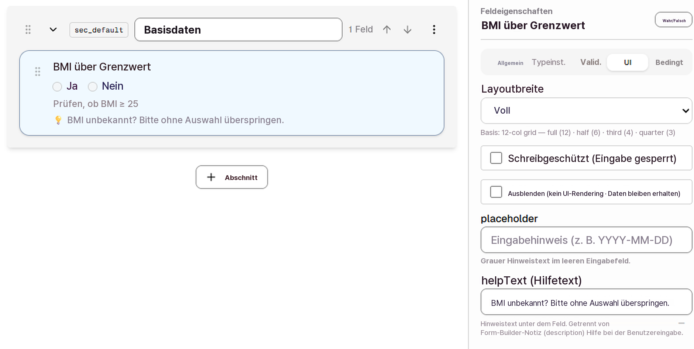
helpText (Hilfetext) — Geben Sie den Hinweistext ein, der unter dem Feld angezeigt wird.
Wird unter den Radiobuttons mit dem Symbol 💡 angezeigt. In der Aufnahme „BMI unbekannt? Bitte ohne Auswahl überspringen.“
placeholder — gilt bei diesem Typ nicht. Auch wenn Sie ihn ausfüllen, erscheint er nicht auf dem Bildschirm, und es wird kein Fehler angezeigt. Auch nach der Umstellung auf Dropdown ist — Auswahl — fest und wird nicht ersetzt. 3.3
description (Hilfetext) — der in 2.1 eingegebene Text. Er ist ein anderes Element als helpText und wird auch an anderer Stelle angezeigt.
Zu beachten
Unbedingt prüfen Datenschäden · Formular nicht abschließbar
- • ⛔ Schreiben Sie keine Hinweise in placeholder. Bei diesem Typ erscheint er nicht auf dem Bildschirm, und der eingetragene Inhalt verschwindet stillschweigend. Beim Typ Einzelauswahl funktioniert er; hier entsteht daher leicht das Missverständnis, dasselbe Vorgehen funktioniere auch. 3.3
- • Schreiben Sie das Beurteilungskriterium in helpText. Mit „Ja“ · „Nein“ allein ist nicht erkennbar, wo die Grenze liegt — wenn Sie wie in der Aufnahme auch festhalten, was bei Unkenntnis zu tun ist, verringern sich die Abweichungen zwischen den Erfassern.
Leicht missverständliches Verhalten
- • description und helpText sind unterschiedliche Elemente. Wie der Bildschirmhinweis sagt — helpText: „Getrennt von Form-Builder-Notiz (description) — Hilfe bei der Benutzereingabe“. Wenn Sie beide eingeben, werden zwei Zeilen zusammen angezeigt.
Hinweis
- • Wenn Sie die Erklärung „Nicht gemessen“ 2.4 aktiviert haben, schreiben Sie auch deren Verwendung in helpText. Kennt der Erfasser die Bedeutung der Checkbox nicht, verwendet er sie nicht.
Tab „Bedingt“ — Anzeige abhängig von anderen Werten
- 6.1Bedingte Anzeige aktivieren
- 6.2Bedingung festlegen
6.1Bedingte Anzeige aktivieren
Überblick
Diese Funktion zeigt dieses Feld abhängig vom Wert eines anderen Felds an oder blendet es aus. Sie wird für Verzweigungen verwendet, bei denen dieses Element nur abgefragt wird, wenn eine vorherige Frage auf eine bestimmte Weise beantwortet wurde. Ist die verborgene Seite (Ziel) ein Wahr/Falsch-Feld, ist das unproblematisch — zu beachten ist der Typ des Referenzfelds, das als Grundlage dient. 6.2
Bildschirmbeschreibung
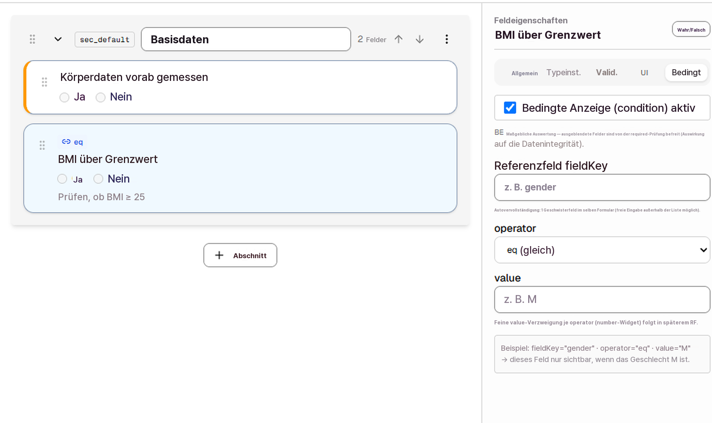
Bedingte Anzeige (condition) aktiv — Wenn aktiviert, werden die folgenden Bedingungseinstellungen angezeigt.
Über dem Feld auf dem Canvas erscheint das Badge 🔗 eq und zeigt an, dass eine Bedingung angewendet wird.
Referenzfeld fieldKey — ein anderes Feld im selben Formular, das als Grundlage der Bedingung dient. Geschwisterfelder desselben Formulars werden automatisch vervollständigt; Werte, die nicht in der Liste stehen, können Sie auch direkt eingeben.
operator — die Vergleichsart. Standard ist eq (gleich).
value — der Vergleichswert. Was hier eingetragen wird, ist der wichtigste Punkt dieses Kapitels. 6.2
⚠ Bildschirmhinweis — „ausgeblendete Felder sind von der required-Prüfung befreit (Auswirkung auf die Datenintegrität).“ Die Bedingung wird vom System ausgewertet.
Beispiel unten — fieldKey="gender" · operator="eq" · value="M" → dieses Feld nur sichtbar, wenn das Geschlecht M ist.
Zu beachten
Unbedingt prüfen Datenschäden · Formular nicht abschließbar
- • ⛔ Legen Sie kein Wahr/Falsch-Feld als Referenzfeld fest. Ist das Grundlagenfeld vom Typ Wahr/Falsch, wird dieses Feld niemals angezeigt. Erstellen Sie Elemente, die als Grundlage dienen sollen, mit dem Typ Einzelauswahl. Einzelheiten finden Sie in 6.2.
- • ⛔ Wenn Sie eine Bedingung festlegen, entfällt die Pflichtprüfung. Solange das Feld ausgeblendet ist, weil die Bedingung nicht zutrifft, wird das Formular abgeschlossen, auch wenn das Pflichtfeld leer ist. Ist die Bedingung falsch, bleiben die Daten daher ohne Fehlermeldung leer.
Leicht missverständliches Verhalten
- • Prüfen Sie die bedingte Anzeige vor Validierungsregeln 4.3. Wenn nicht betroffene Personen gar nicht erst gefragt werden, kann weder falsch ausgewählt noch das Speichern blockiert werden.
Hinweis
- • Wenn Sie die Bedingung aktivieren und das Referenzfeld leer lassen, ist die Bedingung nicht erfüllt. Geben Sie unbedingt ②~④ vollständig ein. 6.2
6.2Bedingung festlegen
Überblick
Der Zustand, nachdem die in 6.1 aktivierte Bedingung vollständig eingegeben wurde. Die Einstellung liest sich als „dieses Feld nur anzeigen, wenn „Körperdaten vorab gemessen“ gleich 1 ist“. Diese Einstellung funktioniert jedoch nicht wie beabsichtigt — weil das Referenzfeld vom Typ Wahr/Falsch ist. Lesen Sie unbedingt die Hinweise unten.
Bildschirmbeschreibung
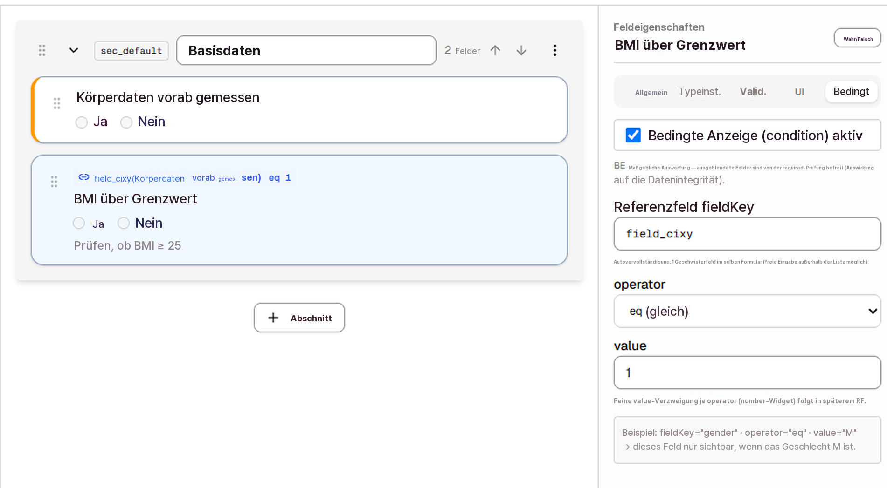
1Referenzfeld fieldKey = field_cixy — verweist auf das Feld „Körperdaten vorab gemessen“ im selben Formular. Das Problem ist, dass dieses Feld vom Typ Wahr/Falsch ist.
Ergebnis nach Eingabe von ①~③ — das Badge auf dem Canvas wird zu 🔗 field_cixy(Körperdaten vorab gemessen) eq 1 konkretisiert. Dass das Badge angezeigt wird, bedeutet nicht, dass die Bedingung erfüllt werden kann.
operator = eq (gleich)
value = 1 — die Zahl 1 wurde eingetragen, um „Ja“ auszudrücken, ist aber ein Format, das sich nicht mit einem Wahr/Falsch-Feld vergleichen lässt.
⚠ Bildschirmhinweis — „ausgeblendete Felder sind von der required-Prüfung befreit (Auswirkung auf die Datenintegrität).“ Ist die Bedingung nicht erfüllt, gilt diese Befreiung dauerhaft.
Beispiel unten — fieldKey="gender" · operator="eq" · value="M" → dieses Feld nur sichtbar, wenn das Geschlecht M ist. Beachten Sie, dass das Beispiel eine Zeichenkette ist.
Zu beachten
Unbedingt prüfen Datenschäden · Formular nicht abschließbar
- • ⛔ Die Einstellung in der Aufnahme funktioniert nicht. Ist das Referenzfeld vom Typ Wahr/Falsch, sind die gespeicherten Werte
true·false, das Feld value wird jedoch immer als Zeichenkette übergeben. Die beiden Formate lassen sich nicht vergleichen; das System gibt die Auswertung auf, und eine nicht auswertbare Bedingung wird als ausgeblendet behandelt. Auch wenn Sietrueeintragen, ist das Ergebnis dasselbe. - • ⛔ Infolgedessen wird dieses Feld niemals angezeigt. Und da ausgeblendete Felder von der Pflichtprüfung befreit sind, wird das Formular ohne Wert abgeschlossen, obwohl es ein Pflichtfeld ist. Da weder Fehler noch Warnung angezeigt werden, bemerken Sie erst nach der Veröffentlichung, dass die Daten leer sind.
- • ⛔ Erstellen Sie Elemente, die als Grundlage einer Bedingung dienen sollen, mit dem Typ Einzelauswahl. Bei der Einzelauswahl ist der gespeicherte Wert eine Zeichenkette und passt im Format zum Feld value — wenn Sie den gespeicherten Wert wie
Yunverändert eintragen, funktioniert es normal. 1.1 - • Prüfen Sie nach dem Einstellen unbedingt in der Vorschau. Dass ein Badge angezeigt wird, heißt nicht, dass die Bedingung erfüllt werden kann — Sie müssen den Grundlagenwert wechseln und prüfen, ob das Feld tatsächlich erscheint.
Leicht missverständliches Verhalten
- • Auch wenn Sie den fieldKey des Referenzfelds ändern oder es löschen, bricht die Bedingung. Die Bedingung ist nicht über den Anzeigenamen, sondern über den fieldKey verknüpft. 2.1
Anhang
- 7.1Einstellungen je Tab auf einen Blick
- 7.2Unbedingt merken · Nicht behandelt
7.1Einstellungen je Tab auf einen Blick
Einstellungen je Tab
| Tab | Element | Was wird festgelegt | Abschnitt |
|---|---|---|---|
| Allgemein | fieldKey | Tatsächlicher Speicherschlüssel des Werts (nach dem Speichern nicht ändern) | 2.1 |
| label (Anzeigename) | Auf dem Bildschirm angezeigter Elementname — als Ja/Nein-Aussage formulieren, damit sich die Antwort zweiteilt | 2.1 | |
| description (Hilfetext) | Ergänzende Beschreibung unter dem Anzeigenamen — Beurteilungskriterium | 2.1 | |
| Pflichtfeld | Ob eine Antwort zwingend ist (zuerst den Umgang mit „Nicht prüfbar“ festlegen) | 2.2 | |
| SDV-Verifizierung | Ob Gegenstand des CRA-Quelldatenabgleichs · ob Verifizierung erforderlich | 2.3 | |
| AE-Bedeutungsrolle | Dieser Typ ist ein Zuordnungsziel — „SAE ja/nein“ u. a. | 1.1 · ※ | |
| „Nicht gemessen“ zulassen | Bei diesem Typ besonders wichtig — der einzige Weg, „Weiß nicht“ festzuhalten | 2.4 | |
| Typeinstellungen | trueLabel | Text für true (leer = „Ja“) — links ist immer true | 3.2 |
| falseLabel | Text für false (leer = „Nein“) | 3.2 | |
| Anzeigeart (displayStyle) | Radio / Dropdown — Standard ist Radio | 3.3 | |
| Standardwert (defaultValue) | Vorausgewählter Wert (nur in der Vorschau prüfbar · Optionen fest „Wahr/Falsch“) | 3.4 | |
| Validierung | ruleType | Regelart — bei diesem Typ nutzbar ist nur Vergleich mit anderem Feld | 4.2 · 4.3 |
| Vergleichselement · operator · Vergleichsziel | Bedingung im Vergleich mit einem anderen Feld desselben Formulars (Vergleich mit true/false) | 4.3 | |
| message | Bei Verstoß angezeigter Text | 4.3 | |
| Bei Verstoß · Aktiv | Vergleich mit anderem Feld ist auf Speichern blockieren festgelegt · Regel aktiv · inaktiv | 4.3 | |
| UI | Layoutbreite | Breite im 12-col grid (bei langem Text nicht verkleinern) | 5.2 |
| Schreibgeschützt | Anzeigen, aber nicht änderbar | 5.3 | |
| Ausblenden | Keine Anzeige auf dem Bildschirm (gespeicherter Wert bleibt erhalten) | 5.3 | |
| helpText | Hinweis zum Beurteilungskriterium (placeholder gilt bei diesem Typ nicht) | 5.4 | |
| Bedingt | Bedingung aktiv | Ob bedingte Anzeige verwendet wird (von der Pflichtprüfung befreit) | 6.1 |
| Referenzfeld fieldKey | Feld desselben Formulars als Grundlage der Bedingung — kein Wahr/Falsch-Feld festlegen | 6.2 | |
| operator · value | Vergleichsart und Vergleichswert (wird als Zeichenkette übergeben) | 6.2 |
7.2Unbedingt merken · Nicht behandelt
Unbedingt merken
Unbedingt prüfen Datenschäden · Formular nicht abschließbar
- • Gespeichert werden immer
true·false. Auch wenn Sie den Text in „YES“ ändern, ändern sich die Daten nicht — beim Vergleich in Validierung · bedingter Anzeige geben Sie nicht den Text, sonderntrue·falsean. 3.2 · 4.3 - • Erstellen Sie Elemente, die als Grundlage einer Bedingung dienen sollen, als Einzelauswahl. Wird ein Wahr/Falsch-Feld als Referenzfeld festgelegt, wird das Zielfeld niemals angezeigt, ist zudem von der Pflichtprüfung befreit und wird ohne Wert abgeschlossen. 6.2
- • Verwenden Sie nicht „Wertebereich“ · „Dezimalstellen“ · „Format (Regex)“. Auf dem Bildschirm sind sie wählbar, greifen bei diesem Typ aber nicht, und ein regulärer Ausdruck kann korrekte Eingaben blockieren. 4.2
- • Das linke Feld (trueLabel) ist immer
true. Wenn Sie die beiden Felder vertauschen, wird die Bedeutung umgekehrt gespeichert, ohne dass ein Fehler angezeigt wird. 3.2 - • Wenn „Weiß nicht“ erfasst werden muss, aktivieren Sie die Erklärung „Nicht gemessen“. Da sich die Optionen nicht erweitern lassen, vermischen sich ohne sie „nein“ und „weiß nicht“ in einem Wert. 2.4
Leicht missverständliches Verhalten
- • Der Standardwert erscheint nicht in der Bearbeitungsansicht. Er ist nur in [Vorschau] erkennbar. Auch die Optionen werden nicht mit dem erstellten Text, sondern als „Wahr (true)“ angezeigt. 3.4
- • Wenn Sie eine Einzelauswahl auf Radio einstellen, sieht der Bildschirm genauso aus. Unterscheiden Sie anhand des Typ-Badges — der Unterschied liegt im gespeicherten Wert. 1.1
- • Die Standard-Anzeigeart ist Radio. Bei der Einzelauswahl ist der Standard Dropdown, also umgekehrt. 3.3
Hinweis
- • Bei derselben Beziehung hat die bedingte Anzeige Vorrang vor Validierungsregeln — wird nicht gefragt, kann auch nichts falsch sein. 4.3 · 6.1
Nicht in diesem Dokument behandelt
※ AE-Bedeutungsrolle — dieser Typ ist ein Zuordnungsziel, da es jedoch keine Aufnahmen des Einstellvorgangs gibt, wurde kein eigener Abschnitt angelegt. Einzelheiten zur Verwendung finden Sie in den Dokumenten zu AE. 1.1
placeholder — das Element wird im Tab „UI“ angezeigt, gilt bei diesem Typ aber nicht. Bei Radiobuttons und Dropdown gibt es keinen Platz für den Text, und auch — Auswahl — im Dropdown ist fest. Schreiben Sie Hinweise in helpText. 3.3 · 5.4
Automatische Berechnung (calculation) — das Element wird im Tab „Typeinstellungen“ angezeigt, bei diesem Typ aber nicht verwendet. Da diese Funktion Werte per Formel berechnet, verwenden Sie sie beim Typ Zahl. 3.1
Anbindung an gemeinsame Codes (CodeGroup) — die Verwaltung von Optionen über projektweite gemeinsame Codes gehört zu den Typen, die Optionen erstellen (Einzelauswahl · Mehrfachauswahl). Bei Wahr/Falsch sind die beiden Werte fest, daher trifft dies nicht zu.
Aktivierungsbedingung (activeParams) — im System definiert, auf diesem Bildschirm gibt es jedoch kein Element dafür.
Bildschirm mit normal funktionierender bedingter Anzeige — die Aufnahme in Kapitel 6 zeigt eine nicht funktionierende Einstellung, weil das Referenzfeld vom Typ Wahr/Falsch ist. Ein normal funktionierendes Beispiel finden Sie in Kapitel 6 des Teilbands Einzelauswahl. 6.2